FOTOGRAFIA I FILMY
Tworzone we współpracy z firmami z branży motoryzacyjnej,
które przyciągają uwagę i napędzają sprzedaż.


Projekty Zdjęciowe
Portfolio projektów fotograficznych wykonanych dla marek motoryzacyjnych i klientów indywidualnych.
Projekty Filmowe
Tworzenie filmów i materiałów wideo dla branży automotive oraz lifestyle.
Workflow
Opis procesu pracy - od koncepcji, przez sesje fotograficzne i filmowe, po finalną postprodukcję.
Kontakt
Zapraszam do kontaktu w celu omówienia współpracy i projektów.